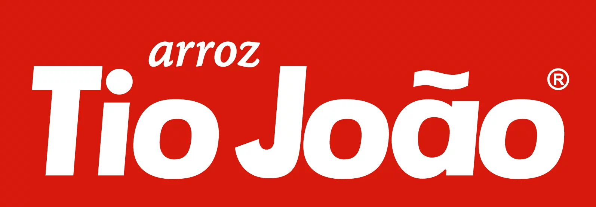
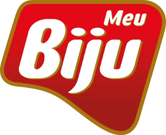
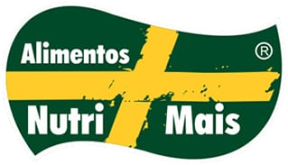

Vinho, arroz, snacks, carne, sal, grãos e estética automotiva. Segmentos que não se parecem em nada — e que chegam ao varejo, ao atacado, aos distribuidores, ao atacarejo e às farmácias pela mesma estrutura de vendas, promoção e retaguarda.
Vinhos e espumantes
Vinícola que levamos à gôndola de bebidas do varejo e do atacado cearense.
Arroz e derivados
Indústria de alimentos especialista em arroz, com portfólio que vai do varejo ao atacarejo.

Arroz
O arroz do grupo Josapar: alto giro e presença que o comprador cobra na seção.

Snacks de arroz
Snacks e derivados de arroz do grupo Josapar, fortes na exposição fora da seção.
Carnes
A carne da JBS: uma operação que exige acerto fino de pedido, entrega e estoque.
Sal
Indústria salina: básico de mercearia, daqueles que ninguém deixa faltar na prateleira.

Grãos
Indústria de grãos, com mix que acompanha de perto a cesta do consumidor cearense.
Se a sua indústria quer presença no Ceará, explicamos como funciona a representação e o que ela entrega todo mês. Sem rodeios.